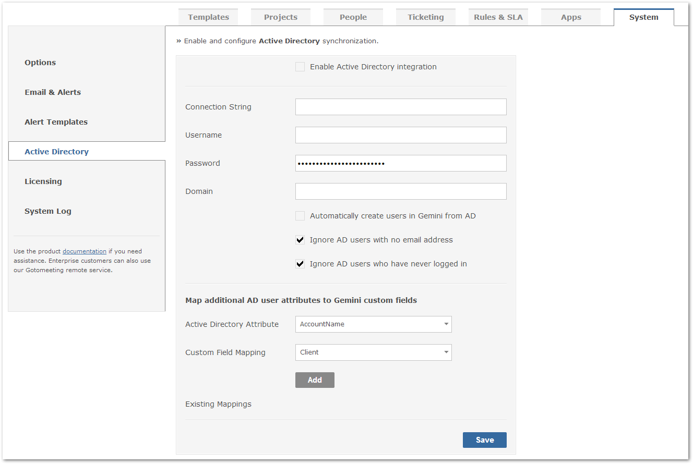
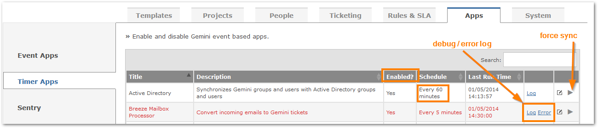

You can integrate with Active Directory by mapping Gemini Security Groups to Active Directory Groups.

The selected account for accessing AD should ideally be a service account with a non-expiring password. Syntax for AD username:
Examples:
You can also choose to create new users in Gemini that exist in Active Directory.
TipIf you need to connect to more than one domain the connection strings can be double pipe (||) delimited.
There are various ways to specify the AD connection string. Syntax:
Examples:
Once you have saved your configuration wait 5 minutes then navigate to any Group and click on the Active Directory multi-select field. If there is no error in the connection you will see a list of your AD Groups.
To help with Active Directory congestion and Gemini performance, Gemini is configured to only import an AD user as long as it meets the three (3) following criteria:
TipIf you want to force a specific domain name for new users. Just simply enter a value of domain in "AD Domain" field.
Gemini allows you to map Active Directory user attributes to custom fields. So when you view a ticket you can see the active directory mapped information in the ticket
From the Apps section you can set the interval between each AD sync, check for errors and even force the sync to run immediately.
